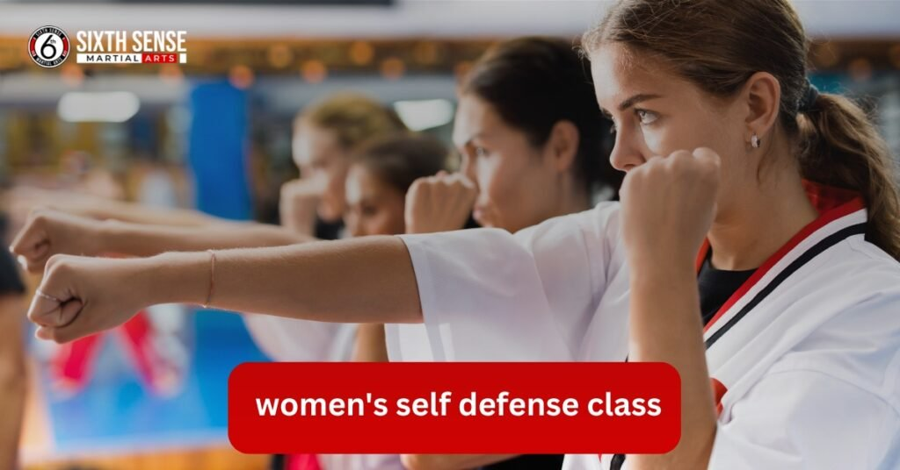
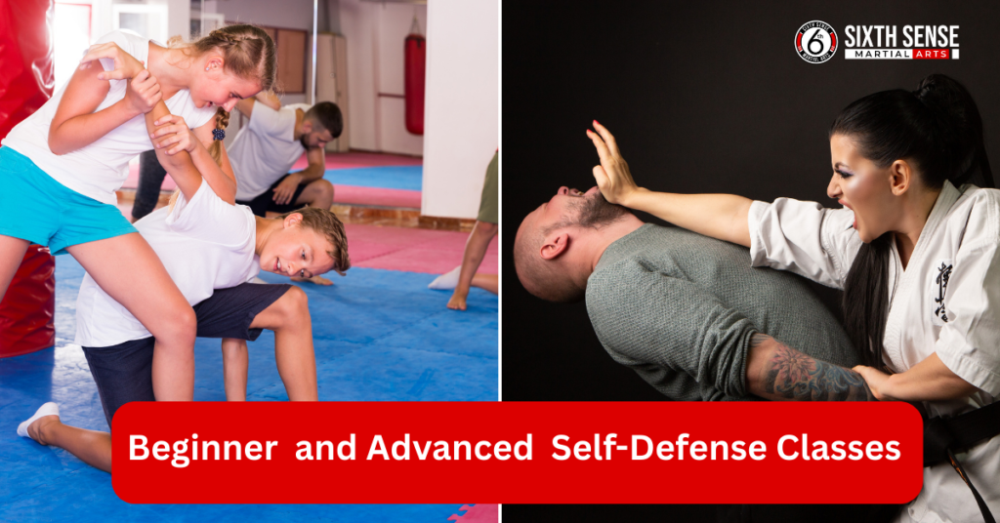
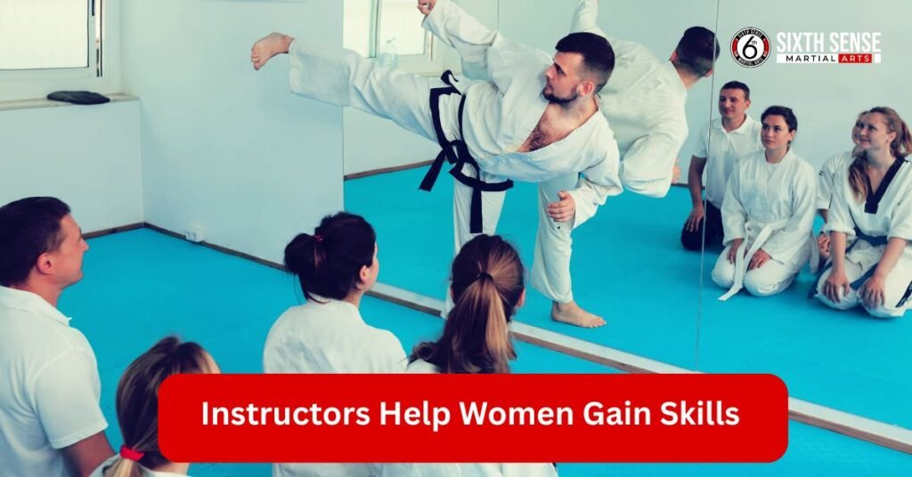

Women’s Self Defense Class by Sixth Sense MMA

Women’s Self Defense Class At Sixth Sense MMA, we offer comprehensive self-defense classes tailored specifically for women. These classes are designed to teach women of all ages and skill levels how to defend themselves in real-world situations. Women’s self-defense isn’t just about learning physical moves it’s about gaining confidence, understanding your surroundings, and empowering yourself with the skills to protect yourself in any situation.
What is Women’s Self-Defense?
Women’s self-defense is a set of techniques and strategies that help women protect themselves from potential harm. It’s a combination of physical defense tactics, mental awareness, and strategic thinking. Our classes focus on everything from basic defense moves to more complex techniques, allowing women to feel prepared in a variety of situations.
Why is self-defense important for women to learn?
Learning self-defense is crucial for women because it provides them with the confidence to stand up against potential threats. In today’s world, where personal safety can often be compromised, having the skills to protect oneself is empowering. Whether it’s in a parking lot, at home, or out in public, women who know self-defense are better equipped to handle dangerous situations and defend themselves effectively.
Types of Self-Defense Courses at Sixth Sense MMA
At Sixth Sense MMA, we offer different types of self-defense classes designed to suit a range of experience levels. Whether you’re a beginner or looking to refine your advanced techniques, we have something for everyone.
Beginner Self-Defense Classes
Our beginner self-defense classes are perfect for those just starting out. In these classes, you’ll learn essential techniques such as basic strikes, blocking, and how to get out of holds. These classes are designed to build your confidence and ensure that you have the skills needed to protect yourself in everyday situations. The focus is on making sure you understand the basic principles of self-defense, so you feel prepared when it counts.
What Beginners Can Expect to Learn
As a beginner, you’ll be introduced to simple yet effective techniques like how to break free from an attacker’s grip, how to strike with power, and how to protect vulnerable areas. You’ll also work on situational awareness, learning how to read your surroundings and identify potential threats before they escalate.
Advanced Self-Defense Classes
For more experienced individuals, our advanced self-defense classes dive deeper into complex techniques. These classes teach you how to handle aggressive attackers, whether in close-quarter situations or while standing. You’ll learn advanced strikes, grappling, and ground fighting techniques, all tailored to real-world situations.
Benefits for Experienced Individuals
Experienced students will benefit from advanced self-defense classes by learning strategies for controlling a confrontation, defending against weapons, and improving reaction time under pressure. Our advanced classes also help students refine their physical skills, making them more prepared for unpredictable, violent situations. These sessions build on the basics and offer a deeper understanding of self-defense tactics, providing more tools to handle dangerous encounters effectively.

Skills Learned in Women’s Self Defense Classes at Sixth Sense MMA
At Sixth Sense MMA, our women’s self-defense classes teach a wide range of essential skills. These skills are not only focused on physical defense but also on mental strategies that help you stay aware and confident in potentially dangerous situations.
Basic Techniques
In our beginner classes, we focus on teaching basic defense moves and positioning that everyone can use. You’ll learn how to properly strike, block, and protect yourself from common attacks. These techniques are simple but effective and can be applied in everyday situations. Over time, you’ll build confidence as you practice these techniques and feel more in control of your personal safety.
How to Build Confidence
As you progress in our classes, you’ll find that your confidence grows. By practicing moves and learning how to handle potentially dangerous situations, you’ll feel empowered, knowing you can protect yourself when needed.
Situational Awareness and Avoidance
In addition to physical techniques, situational awareness is a critical skill taught in our women’s self-defense classes. By learning to stay alert and read your surroundings, you’ll be able to recognize dangerous situations before they escalate. We teach you how to identify potential threats, whether it’s in a crowded place or a secluded area, and how to avoid them.
Importance of Awareness in Self-Defense
Being aware of your surroundings can make all the difference. By knowing what’s happening around you, you can avoid dangerous situations altogether. Our classes emphasize the importance of situational awareness and teach you how to stay calm and alert, making it easier to react if needed.
How Women’s Self-Defense Classes Work at Sixth Sense MMA
Our self-defense classes are designed to be practical and effective. We offer hands-on training in a supportive and controlled environment, allowing women to feel comfortable and confident as they learn.
Course Structure and Flow
Our courses are typically divided into warm-up sessions, technique drills, and sparring, giving you a well-rounded understanding of self-defense. The duration of each class varies, but most sessions last between 45 minutes to an hour, providing enough time for practice without feeling overwhelming.
Instructor’s Role at Sixth Sense MMA
At Sixth Sense MMA, instructors play a vital role in helping you gain the skills and confidence you need to defend yourself. Our instructors are experienced in self-defense and martial arts, ensuring you receive high-quality instruction in every class.
How Instructors Help Women Gain Skills
Instructors focus on teaching both the technical and mental aspects of self-defense. They guide you through the moves, provide personalized feedback, and make sure you’re practicing in a way that suits your skill level. With their guidance, you’ll improve your physical techniques and become more comfortable handling potentially dangerous situations.

Why Choose Sixth Sense MMA for Women’s Self-Defense?
Choosing Sixth Sense MMA for women’s self-defense gives you access to a training program that not only teaches effective self-defense techniques but also empowers you mentally and physically. Here’s why our classes stand out:
Benefits of Choosing Sixth Sense MMA for Self-Defense
- Empowerment Through Training
Self-defense classes at Sixth Sense MMA are designed to give you a sense of empowerment. Knowing you have the skills to protect yourself brings confidence in everyday situations and a sense of control over your personal safety. - Physical and Emotional Benefits
- Physical Benefits: You’ll develop better fitness, agility, and strength. Our classes also improve coordination and endurance, which are essential for self-defense.
- Emotional Benefits: Beyond the physical skills, self-defense training reduces anxiety and fear, helping you feel more in control and secure.
- Experienced Instructors
Our instructors are skilled martial artists and self-defense experts. They bring years of experience and ensure that you learn proper techniques and strategies to stay safe. - Comprehensive and Empowering Classes
Each class is carefully structured to be both thorough and empowering. The training focuses on building your physical and mental capabilities, so you not only learn defense techniques but also how to remain calm and confident in any situation.
Customer Reviews
Muntasir Zaman
“Great gym! Came in for a session today and loved the environment and instruction. The head coach Matheus really paid attention to small details and made sure to give everyone adequate time and focus. Excited to come back!”
Ameera Abbasi
“I had gone for a free trial session and it was so fun. The instructor taught us very well, especially for this being our first time. It was a good workout and I definitely want to come back regularly!”
FunDadMo
“Great hidden jiu jitsu gym for all ages, perfect for learning self defense techniques.” The teacher is great and really knows the art.
Ben Holland
“So excited to have a jiu jitsu gym in our neighborhood! This is what Coppell needed!”
Sana Haq
“My kids love their classes. Professional and friendly instructors ensure you learn effective martial arts for self defense. Clean and well lit space.”
Noor Ghaffar
“I’m so happy to see a good mix of guys and girls at the gym. The pricing isn’t too bad.”
Sagar deep singh
“Coach is super awesome. Soft and tough at the same time with kids.”
Shiraz
“Huge facility and very welcoming coach. Great group of people to train with.”
Adnan Sheriff
“A very clean and organized facility with highly skilled coaches who create a friendly environment for all levels.”
Mohammed Shaazuddin
“Friendly staff and coach with a great atmosphere of learning and support.”
Contact Us at Sixth Sense MMA
At Sixth Sense MMA, we’re excited to help you start your journey toward self-defense and empowerment. If you’re ready to take control of your personal safety and join our women’s self-defense classes, getting in touch with us is easy.
Conclusion
At Sixth Sense MMA, our women’s self-defense classes are designed to empower you with the skills and confidence to protect yourself in any situation. Whether you’re a beginner or have prior experience, our classes cater to all levels, providing practical techniques, mental strategies, and the physical strength needed to stay safe.
Led by experienced instructors, the classes offer a supportive and motivating environment for women of all ages. Learning self-defense is not just about mastering techniques; it’s about gaining confidence, being aware of your surroundings, and feeling empowered to face any challenges. At Sixth Sense MMA, we believe that every woman deserves to feel safe and strong, and our classes are here to help you achieve that.
Follow Us on Social Media
Stay connected with Sixth Sense MMA through our social media channels. Follow us for class updates, training tips, and a closer look at our self defense community.
FAQ’s
Women’s self-defense is a combination of physical techniques, situational awareness, and mental strategies designed to help women protect themselves in real-world situations.
Yes, our advanced classes cover complex techniques including grappling, ground defense, and strategies against aggressive or armed attackers.
Beginners learn essential techniques such as basic strikes, blocking, breaking free from grips, and situational awareness skills.
Most women’s self-defense classes last between 45 minutes to one hour, balancing warm-ups, drills, and practical practice.
You’ll gain confidence, improve fitness, develop effective defense skills, and learn how to stay calm and aware in challenging situations.
Train with us in Coppell
The first class is free. Shorts, a t-shirt and a water bottle. We lend the rest.
Book a free class